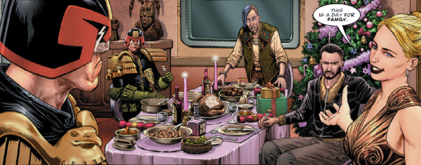

Dredd's niece and the daughter of Rico Dredd, Vienna is a civilian and a rare proponent of family values in the clone grouping of Dredd, Judge Rico & Dolman.
Art by Chris Weston
| Story Title | Parts | Pages | w indicates a wraparound coverCovers | Year(s) | Issues | Writer | Artist | Colourist | Letterer |
|---|---|---|---|---|---|---|---|---|---|
From Judge DreddVienna | 1 | 6 | 0 | 1979 | 116 | John Wagner | Ian Gibson | [b&w] | Tom Frame |
From Judge DreddBlood & Duty | 2 | 13 | 0 | 2002 | 1300-1301 | John Wagner | Colin MacNeil | <-- | Tom Frame |
From Judge DreddThe Satanist | 7 | 42 | 1352: Cliff Robinson & Chris Blythe 1356: Charlie Adlard 2 | 2003 | 1350-1356 | John Wagner | Charlie Adlard | Chris Blythe | Tom Frame |
From Judge DreddBrothers of the Blood | 4 | 24 | 1380: Carlos Ezquerra 1 | 2004 | 1378-1381 | John Wagner | Carlos Ezquerra | <-- | Tom Frame |
From Judge DreddTotal War | 12 | 72 | 1410: Nick Percival 1414: Simon Parr 1417: Simon Coleby 3 | 2004 | 1408-1419 | John Wagner | Henry Flint | Chris Blythe | Tom Frame |
From Judge DreddVisiting Hour | 1 | 6 | 0 | 2005 | 1423 | Gordon Rennie | Anthony Williams | <-- | Tom Frame |
From Judge DreddBlood Trails | 10 | 60 | 0 | 2005 | 1440-1449 | Gordon Rennie | Andrew Currie | Chris Blythe | Tom Frame |
From Judge DreddMatters of Life and Death | 1 | 6 | 0 | 2005 | 1452 | Gordon Rennie | Carlos Ezquerra | <-- | Tom Frame |
From Judge DreddClass of '79 | 1 | 12 | 0 | 2005 | p2006 | John Wagner | Greg Staples | Peter Doherty | Tom Frame |
From Judge DreddNight School | 1 | 10 | Peter Doherty 1 | 2007 | M260 | John Wagner | Peter Doherty | <-- | Peter Doherty |
From Judge DreddThe Spirit of Christmas | 1 | 12 | 0 | 2007 | p2008 | John Wagner | Colin MacNeil | Chris Blythe | Annie Parkhouse |
From Judge Dredd Featuring The Fargo Clan.…Regrets | 5 | 30 | 1579: Karl Richardson 1 | 2008 | 1577-1581 | John Wagner | Nick Dyer | Chris Blythe | Annie Parkhouse |
From Judge Dredd Main subtitle: "Day of Chaos".Tea For Two | 1 | 6 | 0 | 2012 | 1785 | John Wagner | Edmund Bagwell | <-- | Annie Parkhouse |
From Judge DreddLadykiller | 8 | 48 | 1991: Neil Roberts 1994: Ben Willsher 1998: Paul Marshall (a), Chris Blythe (c) 3 | 2016 | 1991-1998 | John Wagner | Carlos Ezquerra | <-- | Annie Parkhouse |
From Judge Dredd Features a cameo from Barney and also float parade balloons of: ‑ Dave the Orangutan ‑ Judge Fish ‑ Giant of the Harlem Heroes ‑ Fergee ‑ Otto Sump Boxing Day | 1 | 12 | 0 | 2016 | 2011 | Rob Williams | Chris Weston | <-- | Annie Parkhouse |
| year | episodes | pages |
| 1977 | 0 | 0 |
| 1978 | 0 | 0 |
| 1979 | 1 | 6 |
| 1980 | 0 | 0 |
| 1981 | 0 | 0 |
| 1982 | 0 | 0 |
| 1983 | 0 | 0 |
| 1984 | 0 | 0 |
| 1985 | 0 | 0 |
| 1986 | 0 | 0 |
| 1987 | 0 | 0 |
| 1988 | 0 | 0 |
| 1989 | 0 | 0 |
| 1990 | 0 | 0 |
| 1991 | 0 | 0 |
| 1992 | 0 | 0 |
| 1993 | 0 | 0 |
| 1994 | 0 | 0 |
| 1995 | 0 | 0 |
| 1996 | 0 | 0 |
| 1997 | 0 | 0 |
| 1998 | 0 | 0 |
| 1999 | 0 | 0 |
| 2000 | 0 | 0 |
| 2001 | 0 | 0 |
| 2002 | 2 | 13 |
| 2003 | 7 | 42 |
| 2004 | 16 | 96 |
| 2005 | 13 | 84 |
| 2006 | 0 | 0 |
| 2007 | 2 | 22 |
| 2008 | 5 | 30 |
| 2009 | 0 | 0 |
| 2010 | 0 | 0 |
| 2011 | 0 | 0 |
| 2012 | 1 | 6 |
| 2013 | 0 | 0 |
| 2014 | 0 | 0 |
| 2015 | 0 | 0 |
| 2016 | 9 | 60 |
| 2017 | 0 | 0 |
| 2018 | 0 | 0 |